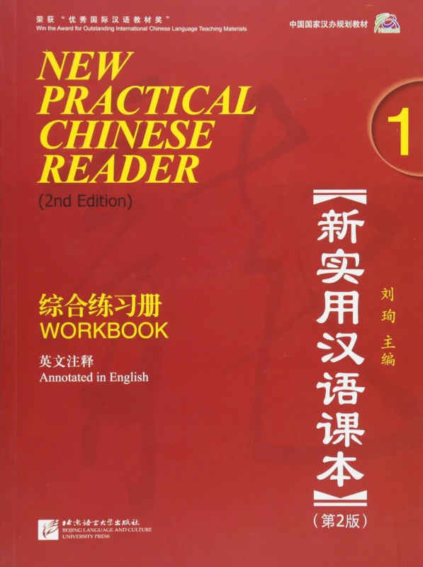

Kiinan oppimisesta

Kiinan kielen opettelu on haastavaa. Useimmat ihmiset ajattelevat, että kiinaa on vaikea oppia kahdesta syystä: ääntäminen ja kirjoitusjärjestelmä. Kielioppi vaikuttaa helpolta. He ovatkin täysin oikeassa, mutta eri syistä kuin normaalisti ajatellaan. Kiina on tonaalinen kieli, joka siis tarkoittaa, että sanan ääntäminen vaikuttaa sen merkitykseen. Jos sanoo "ai" laskevasti, niin se tarkoittaa eri asiaa kuin sen sanominen nousevasti. Vastaavasti "youyong" tarkoittaa ääntämisestä riippuen eri asioita. Kirjoitusjärjestelmä taasen koostuu tuhansista merkeistä, jotka kaikki vaikuttavat oudoilta tuherruksilta tottumattomaan silmään. Joissain on niin monta viivaa ja pilkkua ja koukkua, ettei niitä hullukaan muista. Sen sijaan kielioppi on normaalisti ensivaikutukseltaan ihastuttavan helppo, koska sanoja ei taivuteta, niillä ei ole genusta ja sanajärjestys on vakio subjekti-verbi-objekti kaikissa lauserakenteissa, pienillä variaatioilla tietenkin. Nämä ovat kaikki ensihuomioita ja huomiot ovat täysin oikein. Ne eivät kuitenkaan ole kiinan oppimisen vaikein seikka, kuten tässä kirjoituksessa pyrin osoittamaan.
# Puhuminen
Kiinan ääntäminen ei ensinnäkään ole kovin vaikeaa. Netissä kiinankielisiä oppimateriaaleja ja keskustelupalstoja lueskellessa kannattaa suomalaisen pitää mielessä, että valtaosa siitä mitä lukee on kirjoitettu englanninkielen lähtökohdista, sillä englanti nyt vain sattuu olemaan länsimaiden lingua franca, etenkin netissä. Tästä syystä päätinkin kirjoittaa tämän suomeksi, sillä usea englanninkielisten kokema ongelma ei päde suomalaisiin.
Kiina, kuten japani, on itse asiassa varsin helppoa ääntää suomalaiselle. Suurimmat ääntämisen vaikeudet lienevät hyvin samanlaiset mutta aspiraatioltaan erilaiset z, q, s ja j alkuiset sanat. Toonienkaan ääntäminen ei ole niin mahdottoman vaikeaa. Tooneihin kannattaa asennoitua merkityksen muuttajan sijaan oikein ääntämisenä. Otetaan esimerkiksi hyvin yleinen sana 我 eli minä, lausutaan wǒ. Kun sen on sanonut ääneen tarpeeksi monta kertaa, sen lausuminen väärällä toonilla myös kuulostaa väärältä. Ongelmaa sekaannuksen kanssa ei enää ole. Se, mitä toonit kyllä aiheuttaa kielen oppijalle, on kognitiivisen kuorman lisääntyminen. Tällä tarkoitan, että ennen kuin sanojen oikein ääntäminen tulee selkärangasta, ääntämiseen pitää kiinnittää huomiota ja yrittää muistaa mikä oli se oikea tooni. Kiina on tooniensa vuoksi armottoman täsmällinen, sillä se ei anna anteeksi lainkaan "hoono soomi" kaltaista ääntämistä.
# Kirjoittaminen ja lukeminen
Kiinan kirjoitusjärjestelmä, joka sisältää tuhansia merkkejä, on ongelmallisempi. Ensinnäkin sen aiheuttama kognitiivinen kuorma eli se kuinka suuren aivokapasiteetin sen omaksuminen vaatii, on vielä monin verroin suurempi kuin toonien aiheuttama kognitiivinen kuorma. Merkkien oppimiseen on kuitenkin yksi hyvin tunnettu oikoreitti, nimittäin merkkien komponenttien sekä niiden merkitysten opettelu. Jos niitä ei opi, merkkien oppiminen ilman täydellistä näkömuistia on sula mahdottomuus, tai vaatii ainakin suunnattoman vaivannäön. Merkkien komponentteja on 214. Niiden oppiminen auttaa merkin teeman, ääntämisen, merkityksen ja rakenteen hahmottamisessa. Esimerkiksi kaikilla metalleilla on metalli-komponentti ja kaikilla kaasuilla on ilma-komponentti. Teemasta ja merkityksestä minulla on kerrottavana mielenkiintoinen tarina. Toisinaan kun törmään muissa kielissä sanaan jonka merkitystä en tiedä, saatan kääntää sen huvikseni ensin kiinaksi ennen kuin käännän sen suomeksi. Katson mitkä komponentit merkissä on ja päätellä niistä mitä suurinpiirtein sana tarkoittaa. Hyvin usein osun oikeaan teeman suhteen. Tämä on yksi piilevä etu jonka merkkijärjestelmän summittainenkin tunteminen antaa. Komponenttien merkitysten ja ääntämisen helpottaminen vuorostaan edesauttaa merkkien mieleen painamisessa. Ensimmäinen merkki johon itse hyödynsin puhtaasti komponenttien muodostamaa tarinaa on 数, numero. Siinä on nainen, riisi ja kauha. Siispä: nainen laskee riisinjyviä kauhalla. Tietenkin, tämä vaatii niin sumeaa logiikkaa, ettei samat tarinat toimi kaikille. Niitä kannattaa kuitenkin hyödyntää uusien merkkien opettelussa. Merkitkään eivät ole siis ylivoimainen este.
# Vaikeudet
Mikä siis on kaikista vaikeinta kiinan opiskelussa? Palataanpa ensivaikutelmiin. Ensimmäinen tutustuminen kiinan kieleen antaa vaikutelman, että vaikeimmat osat siitä ovat merkit ja ääntäminen, helpoimman osuuden ollessa kielioppi. Asia on todellisuudessa kuitenkin täysin päinvastoin. Ensivaikutelma on nimittäin hämäävä. Kiinan ylivoimaisesti vaikeimmat osuudet ovat kielioppi ja sanasto, joiden vaikeutta kirjoitustapa nostaa roimasti. Suomea äidinkielenään puhuva on tottunut sanojen taivutuksiin. Tämä ominaisuus on myös kaikilla indoeurooppalaisilla kielillä, kuten saksa, venäjä, englanti, ruotsi ja espanja. Se on siis jokaiselle suomalaiselle tuttua kauraa ala-asteelta lähtien. Kiinan kielessä asiat ovat aivan toisin. Koska sanoja ei taivuteta, asioiden vivahteiden sekä keskinäisten suhteiden ilmaisu toteutetaan erilaisilla partikkeleilla. Koska sanajärjestys on niin määräävä, jokainen yksinkertaisesta subjekti-verbi-objekti lauserakenteesta jatkokehittynyt rakenne vaatii oman ulkoa opettelunsa. Suomessa ja indoeurooppalaisissa kielissä puutteet kieliopissa sekä sanastossa voi korvata helposti luovalla taivuttelulla ja tulla ymmärretyksi. Kiinassa ei. Kiinan kielioppi, kuten sen ääntäminen, on armottoman täsmällinen.
Vielä kielioppia kovempi pähkinä on sanasto. Lännen kielet jakavat hyvin paljon sanastoa keskenään. Suuri osa kreikasta ja latinasta johdetusta sivistyssanastoa on liki identtistä keskenään. Tämä tekee eurooppalaisten kielten opiskelusta suhteellisen vaivatonta sekä mukavaa. Lisäksi yhteinen kreikkalais-roomalais-kristillinen kulttuuriperintö tarkoittaa, että myös sananlaskut sekä idiomit kielten välillä ovat käytännössä identtisiä. Kaiken tuon saa unohtaa kiinan kohdalla, koska Kiina muodostaa itse oman kulttuuripiirisä, sinosfäärin, johon kuuluu Kiinan lisäksi Korea, Japani ja Indokiina. Koko sanasto on täysin erilainen eurooppalaisiin kieliin verrattuna. Siinä ei yksinkertaisesti ole minkäänlaista kiinnikettä mihinkään tuttuun suomalaisesta näkökulmasta katsottuna. Tämä johtaa siihen, että jokainen sana pitää opetella ilman muiden opittujen kielien tarjoamaa tukea. Ajattele vaikkapa germaanisten kielien jakamaa sanastoa. Jos osaa hyvin norjaa, ruotsin ja tanskan opettelu on triviaalia. Jos osaa hyvin saksaa ja englantia, hollantia pystyy lukemaan varsin intuitiivisesti opettelematta kieltä sekuntiakaan. Tähän samankaltaisten kielten tarjoamaan tukeen perustuu ymmärtääkseni polyglottien kyky "oppia" uusia kieli muutamassa päivässä. Parhaana esimerkkinä tästä valtavasta erosta alkuaineet, joiden nimet yleisesti ovat kielestä toiseen ovat hyvin samankaltaisia. Jalokaasu radon on radon kaikissa Euroopan kielissä. Kiinaksi? 氩, yà. Ei näytä eikä kuulosta lainkaan samalta. Sama täydellinen outous vallitsee kaikkialla sanastossa. Jokainen ylpeä polyglotti tulee hakkaamaan päätään kiinan kielimuuriin vuosikausia.
# Idiomit kompasteena
Täysin ufon perussanaston lisäksi kokonaan oma lukunsa on kiinalaisten tapa ilmaista tiettyjä asioita klassisen kiinan idiomeilla, jotka eivät ole mitään mihin kreikkalais-roomalais-kristillisessä kulttuuriperimässä kasvanut eurooppalainen on tottunut. Tuntematta kiinalaisen kirjallisuuden klassikoita, buddhalaisuutta, taolaisuutta ja kiinan myyttistä muinaishistoriaa, ne eivät yksinkertaisesti aukea. Kuten eurooppalaiset, kiinalaiset viljelevät tällaisia sanaparsia antaumuksella. Lisäksi ne usein ilmaistaan klassisella kiinalla, joka tekee niiden hahmottamisesta vieläkin vaikeampaa. Ne ovat kehittyneet määrätyiksi ilmaisuiksi eli inside-läppä meemihokemiksi jotka vain pitää tietää. Tämä lisää ulkoa opettelua entisestään aiemman jo valmiiksi hirvittävän ulkoa opettelun määrän lisäksi. Ja näitä sanaparsia on niin paljon, että niistä on olemassa kokonaisia paksuja sanakirjoja! Niiden käyttö on lisäksi eräänlainen nokkeluuden osoitus. Tämä tarkoittaa, että kiinalaisen nettikeskustelun lukeminen on melkeinpä toivotonta. Ja sama pätee myös keskusteluun kiinalaisten kanssa. Jossain vaiheessa vastaan yksinkertaisesti tulee tavurykelmä, jossa ei ole mitään järkeä. Ja sitten taas. Ja taas. Klassisen kiinan idiomeista on myös johdettu käytäntö lyhentää sanoja mahdollisimman paljon. Suosikkiesimerkkini on 海内外, meri-sisä-ulko, suoraan New Practical Chinese Readerin esipuheesta. Mitä helvettiä se tarkoittaa? Jokin on meren syvyyksissä ja pinnalla vai täh? Ei, ei tietenkään! "Kotimaassa ja ulkomailla", sitä se tarkoittaa. Minulla ei ole mitään käsitystä miksi siinä on meren merkki. Lyhentämättömänä saman voisi ilmaista seuraavasti: 祖国和外国. Kahden merkin tähden. Kun varsinaisia klassisia idiomeja on runsaasti, näitä tällaisia on vielä enemmän.
Nämä kolme seikkaa tekevät kiinan opiskelusta niin työlästä, että suomalaisen pitää suhtautua siihen nöyrästi elämän mittaisena projektina, sillä sujuva kielenkäyttö vaatii kokonaisen uuden kulttuurin omaksumisen, kulttuurin joka on hyvin erilainen kuin omamme. Alkujaan kun aloitin kiinan opiskelun, sain kuvaamieni ensivaikutelmien kautta sellaisen käsityksen, että kiinan oppiminen arjessa pärjäämisen tasolle enintään vuoden. Tämä oli hirvittävä virhelaskelma. Myöhemmin tunnustin hammasta purren, että asia ei ollutkaan niin yksinkertainen ja arvoin uudestaan sujuvuuden saavuttamisen vievän kolme vuotta. Kun en kolmen vuoden opiskelun jälkeenkään kyennyt noin vain lukemaan edes hyvin yksinkertaisesti kirjoitettua kiinalaisille alakoululaisille suunnattua Hans Christian Andersenin satukirjaa, 《安徒生通话》, olin kuitenkin niin edistynyt että hahmotin jo todellisten kielenoppimisen vaikeuksien olevan sellaisia joihin en ollut asennoitunut lainkaan enkä ottanut huomioon (kielioppi, sanasto, idiomit). Tuonkin havainnon tekeminen olisi ollut liki mahdotonta ilman siihen mennessä karttunutta mittavaa kokemusta, sillä suuri enemmistö keskustelusta ja artikkeleista sekä oppimateriaaleista keskittyy nimenomaan merkkeihin ja ääntämiseen. Suurimmat kompastuskivet ovat näkymättömissä rannan mutapohjassa eikä niihin kompastu ja lyö päätään ennen kuin on jo kahlannut tarpeeksi syvälle.